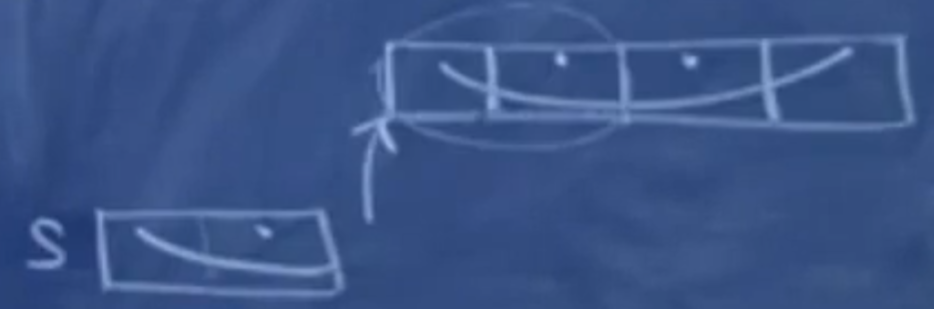

# 斯坦福编程范式 CS107_2
| C/C++ | |
|---|---|
| bool | |
| char | 1 byte |
| short | 2 bytes |
| int | 2–4 bytes |
| long | 4 bytes |
| long long | 8 bytes |
| float | 4 bytes |
| double | 8 bytes |
# 1. 为什么二进制中不简单的将 1 置在最左侧表示负数（如，-3 为 1011）
因为如果是这样的话，-3 + 3 将等于：
1011 + 0011 = 1110 |
显然结果是 -6 而不是 0。所以为了使正负数相加得到全 0 或全 1，如：
1100 + 0011 = 1111 |
这样得到全 1 后，我们只需要再 +1，就可以得到全 0：
1111 + 0001 = (1)0000 这里的1越界了所以不算 |
所以实际上，我们采用 全部取反 并 +1 的方式用来表示负数： -3 （1101）. 这种方法就叫做 2补码
在 short 类型中，为了使 正数和负数 的数量一致，我们把最左边的那一比特空出，用于分割正数和负数，即正数最大为 $2^{15} -1 $：
0 1 1 1 1 1 1 1 1 1 1 1 1 1 1 1 |
负数最小是 ：
1 0 0 0 0 0 0 0 0 0 0 0 0 0 0 0 |
# 2. 语言中变量间的相互赋值是如何实现的？
当我们运行如下程序的时候：
char ch = 'A';
short s = ch;
cout << s << endl;
------
65
在内存中就是这样进行的：(每一个格子代表 1byte)，内存直接将 ch 的内容复制道 s 中。
| ch | 65 | |
|---|---|---|
| s | 0 | 65 |
如果运行如下程序时：
short s = 67;
char ch = s;
cout << ch << endl;
------
C
进行如上赋值操作时，16bit 不能够被直接压缩成为 8bit 的模式。因而 C 和 C++ 中会简单的只关注低位上的内容，而把高位内容直接丢弃。
如果进行如下程序时：
short s = -1;
int i = s;
内存中所进行的操作是这样的：
| s | 1…1 | 1…1 | ||
|---|---|---|---|---|
| int | 1…1 | 1…1 | 1…1 | 1…1 |
这种操作被称为 “符号扩展”。会将 符号位一位一位向上复制，就会导致 int 的前两字节内全变为 1，使得实际的数值仍然为 -1
# 3. 浮点数 float
对于浮点数 float，其将整数范围缩小，节省下来的 bit 位用来表示 2 的负次幂，这样就可以表示小数了。这是技术上可以实现的一种方式，但 实际上并不是这样 。
实际上对于浮点数这样 4 byte 大小的数，浮点数将其中的 1 位用来表示符号，将其中的 8 位用来表示整数，剩下的 23 位用来表示小数。如下：
s exp(8bit) xxxxxxxx(23bit) |
那么任何一个数都可以用如下形式进行表示：
例如，对于 7.0，我们可以表示为：
总归是可以表示到如上的标准形式。
# 4. 整数与浮点数之间的赋值
如果有以下程序：
int i = 5;
float f = i;
cout << f << endl;
----------
这其中变化是这样的：
被解释为 随后又被解释为 接着又被解释为 . 因此 exp = 129，xxx=0.25。
如果有以下程序：
int i = 37;
float f = *(float*)&i; // 对i的地址求值
&i 表示 i 的地址，i 是 int 类型的数，因而 &i 是 int * 类型的指针。
(float*)&i 表示将 int * 类型 转变为了 float * 类型，bit 位置不会发生改变，而因为 37 对应的 bit 位 都落在了 xxxxxx 的位置上，因而 exp = 0，这就是一个奇小无比的数，而不是 37.0
如果有以下程序：
float f = 7.0;
short s = *(short *)&f;
float 是 4 字节的数，指针指向 float 的最高位。当利用上述代码进行类型强制转换的时候，因为 short 只有 2 字节，因而 float 只有高位的两字节被直接复制过来，定义成了一个 short 类型的数。如下图所示：
